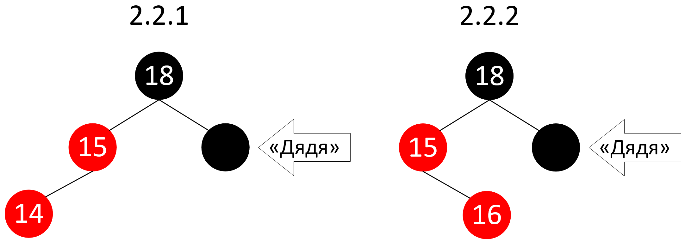

Алгоритмизация и Программирование
Морозов Владимир Игоревич
Красно-чёрные деревья
Постановка проблемы
- Рассмотренные ранее двоичные деревья поиска предоставляли хорошую эффективность ($O(log_2(N))$), если были сбалансированы
- Однако возможна и ситуация, представленная на следующем слайде
- Чтобы поддерживать сбалансированное состояние, используются деревья со специальной структурой, одно из которых мы и рассмотрим
Проблема BST
Постановка проблемы
- Для преобразования дерева без нарушения свойства двоичного дерева поиска используются повороты – алгоритмы перестановки связей между несколькими вершинами в дереве
- Существуют два поворота: налево и направо
Повороты
Поворот направо
- Поворот производится относительно одной вершины
- Для совершения правого поворота у вершины должен существовать левый потомок
- Если это условие выполняется, поворот осуществляется по следующему алгоритму
Поворот направо
- Бывший левый потомок $y$ текущего узла $x$ становится его родителем
- Текущий узел $y$ становится правым потомком своего бывшего левого потомка $x$
- Бывший правый потомок левого потомка $\beta$ текущего узла становится левым потомком текущего узла $y$
- Остальные связи остаются неизменны
Поворот налево
- Левый поворот выполняется симметрично правому
- Т.е., чтобы получить алгоритм для левого поворота нужно в алгоритме для правого поменять местами все слова «левый» и «правый»
- Т.к. поворот включает фиксированное количество перестановок связей, его сложность $O(1)$
Поворот налево
Красно-чёрное дерево
Красно-чёрное дерево – двоичное дерево поиска, в котором выполняются пять свойств:
- Каждый узел имеет цвет: красный или чёрный
- Корень дерева (но не поддерева) – всегда чёрный узел
- Листьями дерева являются специальные элементы $NULL$ и они тоже чёрные
Красно-чёрное дерево
- Если узел красный, то оба его дочерних узла чёрные
- Для каждого узла все простые пути от него до листьев, являющихся потомками данного узла, содержат одно и то же количество чёрных узлов
Пример
Преимущества
- Организация дерева представленным образом даёт одно важнейшее свойство
- Для каждого поддерева выполняется, что его высота может превышать высоту соседнего поддерева не более чем вдвое
- За счёт этого в дереве всегда поддерживается состояние, близкое к сбалансированному, что позволяет всем операциям гарантированно выполняться за $O(log_2(N))$
Эффективное представление нулевых вершин
- Т.к. нулевая вершина должна иметь цвет, мы не можем заменить её просто указателем на $NULL$
- Однако, т.к. эти вершины всегда чёрные, никогда не имеют значений и никогда не указывают на потомков, мы можем заменить их все единственной нулевой вершиной
Эффективное представление нулевых вершин

Алгоритмы на красно-чёрном дереве
Т.к. красно-чёрное дерево представляет собой двоичное дерево поиска, все алгоритмы поиска на нём остаются неизменны, а именно:
- Поиск элемента по ключу
- Поиск наибольшего и наименьшего элементов
- Поиск элемента, следующего за данным и предыдущего для данного
Однако вставка и удаление элементов могут нарушить свойство красно-чёрного дерева, поэтому для них разработаны новые алгоритмы
Вставка (insert)
- Первый этап вставки происходит так же, как и в обычном двоичном дереве поиска
- Однако при этом вставляемый узел обязательно окрашивается в красный цвет
Вставка элемента $26$
Нарушение свойств при вставке
При вставке все свойства дерева могут сразу выполниться (как на предыдущем слайде), но также два из них могут быть нарушены:
- В случае, если дерево изначально было пустым, при вставке красного узла корень окажется красным
- Это нарушение свойства $2$
- Чтобы исправить это, просто перекрасим корень в чёрный
Нарушение свойств при вставке
- В случае, если узел, родительский для вставленного, красный, нарушается свойство $4$
- Исправление этого нарушения будет рассмотрено далее
Ситуация $2$
Ситуация $2$
В таком случае возможны две подситуации:
- «Дядя» (второй потомок родителя родителя) вставляемого узла красный ($2.1$)
- «Дядя» вставляемого узла чёрный ($2.2$)
Подситуации $2.1$ и $2.2$
Подситуация $2.1$
В данном случае для восстановления всех свойств нужно перекрасить родителя родителя в красный, а родителя и «дядю» – в чёрный:
Подситуация $2.2$
В случае $2.2$ может быть ещё два подслучая:
- Вставляемый узел – левый потомок для своего родителя ($2.2.1$)
- Вставляемый узел – правый потомок для своего родителя ($2.2.2$)
Случаи $2.2.1$ и $2.2.2$

Случай $2.2.1$
В случае $2.2.1$ необходимо сделать поворот направо относительно родителя родителя и перекрасить цвета:
Случай $2.2.1$
В случае $2.2.2$ необходимо сделать поворот налево относительно родителя вставляемого узла и мы получим случай $2.2.1$:
Удаление узла (delete)
Сначала рассмотрим три ситуации удаления узла из двоичного дерева поиска:
- У удаляемого узла нет потомков, тогда мы просто заменим его $NULL$-узлом
- У удаляемого узла один потомок, тогда мы просто запишем потомка вместо удаляемого узла
Удаление узла (delete)
Сначала рассмотрим три ситуации удаления узла из двоичного дерева поиска:
- У удаляемого узла есть два потомка, тогда мы найдём наибольший элемент в его левом поддереве, запишем его значение на место удаляемого узла и будем удалять наибольший элемент из его левого поддерева, сводя всё ко второй ситуации
Удаление узла (delete)
Теперь, переходя к красно-чёрному дереву, встретим ещё три ситуации:
- Удаляемый узел красный и у него нет потомков
- Удаляемый узел чёрный и у него нет потомков
- Удаляемый узел чёрный и у него есть один потомок
В первой ситуации просто заменим удаляемый узел на $NULL$-узел. В результате все свойства красно-чёрного дерева сохранятся.
Ситуация $3$
- Удаляемый узел чёрный и у него есть один потомок
- В таком случае можно доказать, что поддерево-потомок может выглядеть единственным возможным образом
- Тогда заменяем удаляемый элемент его потомком и окрашиваем его в чёрный
Ситуация $3$
Ситуация $2$
- Удаляемая вершина чёрная и не имеет потомков
- Чтобы представленные далее алгоритмы можно было использовать рекурсивно, стоит её обобщить
- Представим эту вершину в виде корня некоторого поддерева
- В результате удаления количество чёрных узлов на пути до листьев (т.н. чёрная высота) у этого поддерева уменьшается на $1$
Ситуация $2$

Ситуация $2$
- Будем считать, что поддерево, чёрная высота которого изменилась, – правый потомок своего родителя
- Если в действительности это левый потомок, алгоритмы будут симметричны
- Начнём с ситуации, когда родитель уменьшаемого поддерева красный
- В таком случае у него точно есть чёрный потомок
Ситуация $2.1$
Треугольником на рисунке обозначено уменьшаемое поддерево
Ситуация $2.1$
- В таком случае у нас есть две подситуации: когда у чёрного узла есть хотя бы один красный потомок ($2.1.1$) и когда их нет ($2.1.2$)
- Рассмотрим ситуацию, когда он есть, тогда нужно только совершить два поворота и перекрасить один узел
Ситуация $2.1.1$

Ситуация $2.1.2$
- Теперь рассмотрим ситуацию, когда у $B$ нет красных потомков
- Тогда нам нужно просто поменять цветами $A$ и $B$
Ситуация $2.2$
- Рассмотрим ситуацию $2.2$, когда родитель уменьшаемого поддерева ($A$) чёрный
- Узел $B$ в таком случае может быть красным ($2.2.1$) или чёрным ($2.2.2$)
Ситуация $2.2.1$
- Начнём с ситуации, когда $B$ красный
- В таком случае у $B$ точно будет потомок $C$ и это порождает ещё две ситуации: когда у $C$ есть красный потомок ($2.2.1.1$) и когда его нет ($2.2.1.2$)
Ситуация $2.2.1.1$
Ситуация $2.2.1.2$
Ситуация $2.2.2$
- Теперь рассмотрим ситуацию, когда B – чёрный
- Снова задаёмся вопросом, есть ли у него красные потомки, если да ($2.2.2.1$):
Ситуация $2.2.2.1$
Если у $B$ всё же нет красных потомков, перекрасим $B$ в красный, поднимемся в $A$ (так, что он теперь корень уменьшенного поддерева) и будем рекурсивно повторять алгоритм удаления:
Вычислительная сложность
- Все рассмотренные операции на красно-чёрном дереве выполняются максимум за $O(log_2(N))$
- Ситуации, когда требуются только повороты и перекраска требуют $O(1)$ времени
- Редкие случаи, когда требуется рекурсия занимают $O(log_2(N))$ времени, т.к. при рекурсии всегда происходит спуск или подъём по простому пути
Реализация в C++
На основе красно-чёрных деревьев в C++ реализованы следующие контейнеры:
std::setstd::map
Полезные источники
- RU Лекция преподавателя из МФТИ (более простой алгоритм, который представлен в презентации)
- RU Томас Х. Кормен, Чарльз И. Лейзерсон, Рональд Л. Ривест, Клиффорд Штайн. Алгоритмы: построение и анализ, 3-е издание. Глава 13 – Основная книга нашего курса.
- EN Подробное объяснение алгоритмов из книги [2]
Полезные источники
- RU Статья про балансировку
- RU Статья про удаление узлов
- EN Визуализация красно-чёрного дерева